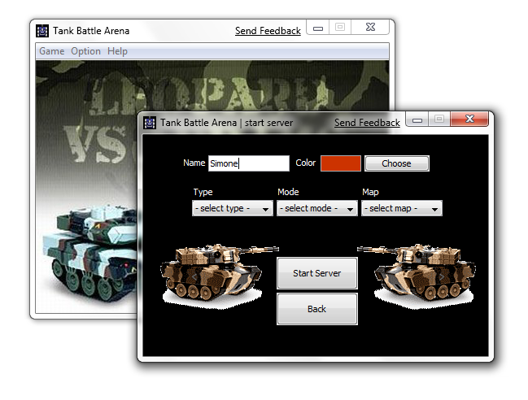
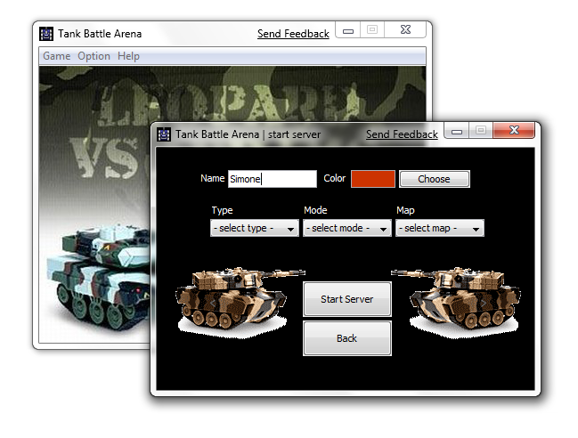

Per quanto riguarda l'interfaccia grafica sono stati utilizzati i componenti swing. La logica di funzionamento consiste in una finestra principale
dalla quale è possibile gestire il gioco mediante dei menù. È possibile far partire il gioco sia in modalità Server che in modalità Client.


Per far partire il Server, bisogna cliccare su "Start server"
 

e comparirà una nuova finestra da cui è possibile scegliere le impostazioni di gioco, come il tipo (in team o da soli), la modalità (death match o score match) e la mappa, ed inoltre il nome ed il colore del Tank


Per far partire il Client, bisogna cliccare su "Join server"

comparirà una finestra di dialogo in cui è possibile scegliere il nome del tank ed il colore. Per quanto riguarda gli altri parametri di gioco, non bisogna settarli, perché verranno passati dal server a cui ci si aggancia.

a questo punto si avvia lo scanner di rete, che va in cerca di eventuali server
pronti a ricevere. Se ce ne fosse qualcuno, lo scanner lo rileverebbe e visualizzerebbe il risultato
nella tabella (come mostrato in figura). Se dopo alcuni secondi (dipende dalla latenza della rete
a cui si è connessi) non dovesse comparire nulla, potete cliccare su refresh
in modo da riavviare lo scanner di rete, per un'altra scansione, in cerca del server. Una volta
trovato il server (potrebbero essercene più di uno), basta fare doppio click sulla riga
nella tabella, ed il client si connette automaticamente, facendo partire il gioco.

Una volta partito il gioco, ci si trova nella mappa, a prescindere dalla modalità
prescelta (client o server). Le possibili mappe sono 4 e sono:
DESERT

GLACIER

GRASSLAND

METAL ARENA

Dal gioco è possibile uscire, premendo il tasto Esc(ape). Si va in una
finestra di opzioni, dalla quale è possibile settare sia la musica che gli effetti sonori
ad ON/OFF, e da cui è possibile ritornare al gioco, oppure alla finestra principale (come mostrato in figura).


Dal menù principale, si possono settare anche alcune impostazioni come il
debug mode ed il look and feel. È anche possibile
settare la musica e gli effetti sonori ad ON/OFF, oppure passare alla modalità
Full Screen


Infine è possibile accedere ad una finestra di dialogo che visualizza la licenza di utilizzo GNU/GPL ed una piccola animazione con i credit del gioco.